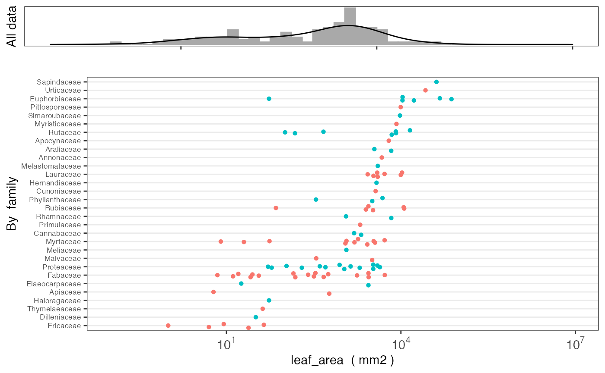

austraits
Fonti Kar, Daniel Falster
2-Jun-2021
austraits.RmdThe austraits package is designed to aid users to access data from AusTraits, a curated plant trait database for the Australian flora. This package contains several core functions to wrangle and visualise data. Below we included a tutorial to illustrate how to use these functions in greater detail.
Getting started
austraits is still under development. To install the current version from github
install.packages("remotes")
remotes::install_github("traitecoevo/austraits", build_vignettes = TRUE)
# Load the austraits package
library(austraits)Meta-data for traits
# List of all traits
austraits$definitions$traits$elements %>% names() %>% head() ; austraits$definitions$traits$elements %>% names() %>% tail() #> [1] "accessory_cost_mass" "accessory_cost_fraction"
#> [3] "bark_delta13C" "bark_delta15N"
#> [5] "bark_mass_area" "bark_density"#> [1] "dead_wood_P_per_dry_mass" "dead_wood_K_per_dry_mass"
#> [3] "dead_wood_Ca_per_dry_mass" "dead_wood_Mg_per_dry_mass"
#> [5] "dead_wood_Na_per_dry_mass" "woodiness"
# Description of a particular trait, its variable type, the units the trait is measured in and the range of trait values
austraits$definitions$traits$elements$leaf_angle#> $description
#> [1] "Leaf angle, relative to horizontal"
#>
#> $type
#> [1] "numeric"
#>
#> $units
#> [1] "degrees"
#>
#> $label
#> [1] "Leaf angle, relative to horizontal"
#>
#> $values
#> $values$minimum
#> [1] -180
#>
#> $values$maximum
#> [1] 180Extracting data
AusTraits contains 446 plant traits. In most cases, users would like to extract a subset of the dataset for their own research purposes. extract_datasetextracts a particular study, whereas extract_traitsubsets by certain traits. Note that the other tables and elements of the austraits data are extracted too, not just the main trait table. See ?extract_dataset and ?extract_trait for more details
Extracting by study
# Filtering one particular study and assigning it to an object
zanne_09 <- extract_dataset(austraits, "Zanne_2009") #Extract from austraits
names(zanne_09) # The function extracts all the other tables and elements#> [1] "traits" "sites" "contexts"
#> [4] "methods" "excluded_data" "taxonomic_updates"
#> [7] "taxa" "definitions" "contributors"
#> [10] "sources" "build_info"
# Filtering multiple studies by same lead author (e.g. Falster) and assigning it to an object
( dataset_ids <- austraits$methods$dataset_id %>% unique() ) #All possible dataset_ids #> [1] "Falster_2003" "Falster_2005_1" "Falster_2005_2" "Zanne_2009"
( falster_ids <- dataset_ids[str_which(dataset_ids, "Falster")] ) # Extracting dataset_ids with lead author "Falster" #> [1] "Falster_2003" "Falster_2005_1" "Falster_2005_2"
falster_studies <- extract_dataset(austraits, falster_ids) # Extract from austraits
falster_studies$traits$dataset_id %>% unique() #> [1] "Falster_2003" "Falster_2005_1" "Falster_2005_2"Extracting by trait
# Filtering one particular trait and assigning it to an object
sla_data <- extract_trait(austraits, "specific_leaf_area") #Extract from austraits
sla_data$traits$trait_name %>% unique()#> [1] "specific_leaf_area"
# Filtering all leaf associated data and assigning it to an object
( traits <- austraits$traits$trait_name %>% unique() ) #All possible traits #> [1] "leaf_angle" "leaf_area" "leaf_compoundness"
#> [4] "branch_mass_fraction" "huber_value" "leaf_N_per_dry_mass"
#> [7] "seed_mass" "specific_leaf_area" "wood_density"
#> [10] "fire_response" "plant_height"
( leaf_traits <- traits[str_which(traits, "leaf")] ) # Extracting data where "leaf" occurs in the trait_name#> [1] "leaf_angle" "leaf_area" "leaf_compoundness"
#> [4] "leaf_N_per_dry_mass" "specific_leaf_area"
leaf_data <- extract_trait(austraits, leaf_traits) # Extract from austraits
leaf_data$traits$trait_name %>% unique() #> [1] "leaf_angle" "leaf_area" "leaf_compoundness"
#> [4] "leaf_N_per_dry_mass" "specific_leaf_area"Join data from other tables and elements
Once users have extracted the data they want, they may want to merge in other study details into the main traits dataframe for their analyses. For example, users may require taxonomic information for a phylogenetic analysis. This is where the join_ functions come in. There are five join_ functions in total, each designed to append specific information from other tables and elements in the austraits object. Their suffixes refer to the type of information that is joined, e.g. join_taxonomy appends taxonomic information to the traits dataframe. See ?join_all for more details.
# Join taxonomic information
(leaf_data %>% join_taxonomy)$traits#> # A tibble: 306 x 16
#> dataset_id taxon_name site_name context_name observation_id trait_name value
#> <chr> <chr> <chr> <chr> <chr> <chr> <dbl>
#> 1 Falster_2… Acacia my… Ku-ring-… <NA> Falster_2003_… leaf_angle 66.1
#> 2 Falster_2… Acacia my… Ku-ring-… <NA> Falster_2003_… leaf_area 319
#> 3 Falster_2… Acacia my… Ku-ring-… <NA> Falster_2003_… leaf_comp… NA
#> 4 Falster_2… Acacia su… Ku-ring-… <NA> Falster_2003_… leaf_angle 71.7
#> 5 Falster_2… Acacia su… Ku-ring-… <NA> Falster_2003_… leaf_area 562
#> 6 Falster_2… Acacia su… Ku-ring-… <NA> Falster_2003_… leaf_comp… NA
#> 7 Falster_2… Angophora… Ku-ring-… <NA> Falster_2003_… leaf_angle 50.8
#> 8 Falster_2… Angophora… Ku-ring-… <NA> Falster_2003_… leaf_area 1590
#> 9 Falster_2… Angophora… Ku-ring-… <NA> Falster_2003_… leaf_comp… NA
#> 10 Falster_2… Banksia m… Ku-ring-… <NA> Falster_2003_… leaf_angle 53.1
#> # … with 296 more rows, and 9 more variables: unit <chr>, date <chr>,
#> # value_type <fct>, replicates <chr>, original_name <chr>, family <chr>,
#> # genus <chr>, taxonRank <chr>, acceptedNameUsageID <chr>
# Join methodological information
(leaf_data %>% join_methods)$traits#> # A tibble: 306 x 16
#> dataset_id taxon_name site_name context_name observation_id trait_name value
#> <chr> <chr> <chr> <chr> <chr> <chr> <dbl>
#> 1 Falster_2… Acacia my… Ku-ring-… <NA> Falster_2003_… leaf_angle 66.1
#> 2 Falster_2… Acacia my… Ku-ring-… <NA> Falster_2003_… leaf_area 319
#> 3 Falster_2… Acacia my… Ku-ring-… <NA> Falster_2003_… leaf_comp… NA
#> 4 Falster_2… Acacia su… Ku-ring-… <NA> Falster_2003_… leaf_angle 71.7
#> 5 Falster_2… Acacia su… Ku-ring-… <NA> Falster_2003_… leaf_area 562
#> 6 Falster_2… Acacia su… Ku-ring-… <NA> Falster_2003_… leaf_comp… NA
#> 7 Falster_2… Angophora… Ku-ring-… <NA> Falster_2003_… leaf_angle 50.8
#> 8 Falster_2… Angophora… Ku-ring-… <NA> Falster_2003_… leaf_area 1590
#> 9 Falster_2… Angophora… Ku-ring-… <NA> Falster_2003_… leaf_comp… NA
#> 10 Falster_2… Banksia m… Ku-ring-… <NA> Falster_2003_… leaf_angle 53.1
#> # … with 296 more rows, and 9 more variables: unit <chr>, date <chr>,
#> # value_type <fct>, replicates <chr>, original_name <chr>, methods <chr>,
#> # year_collected_start <chr>, year_collected_end <chr>, collection_type <chr>
# Join site based information
(leaf_data %>% join_sites)$traits#> # A tibble: 306 x 14
#> dataset_id taxon_name site_name context_name observation_id trait_name value
#> <chr> <chr> <chr> <chr> <chr> <chr> <dbl>
#> 1 Falster_2… Acacia my… Ku-ring-… <NA> Falster_2003_… leaf_angle 66.1
#> 2 Falster_2… Acacia my… Ku-ring-… <NA> Falster_2003_… leaf_area 319
#> 3 Falster_2… Acacia my… Ku-ring-… <NA> Falster_2003_… leaf_comp… NA
#> 4 Falster_2… Acacia su… Ku-ring-… <NA> Falster_2003_… leaf_angle 71.7
#> 5 Falster_2… Acacia su… Ku-ring-… <NA> Falster_2003_… leaf_area 562
#> 6 Falster_2… Acacia su… Ku-ring-… <NA> Falster_2003_… leaf_comp… NA
#> 7 Falster_2… Angophora… Ku-ring-… <NA> Falster_2003_… leaf_angle 50.8
#> 8 Falster_2… Angophora… Ku-ring-… <NA> Falster_2003_… leaf_area 1590
#> 9 Falster_2… Angophora… Ku-ring-… <NA> Falster_2003_… leaf_comp… NA
#> 10 Falster_2… Banksia m… Ku-ring-… <NA> Falster_2003_… leaf_angle 53.1
#> # … with 296 more rows, and 7 more variables: unit <chr>, date <chr>,
#> # value_type <fct>, replicates <chr>, original_name <chr>,
#> # latitude (deg) <chr>, longitude (deg) <chr>
# Join context information
(leaf_data %>% join_contexts)$traits#> # A tibble: 306 x 12
#> dataset_id taxon_name site_name context_name observation_id trait_name value
#> <chr> <chr> <chr> <chr> <chr> <chr> <dbl>
#> 1 Falster_2… Acacia my… Ku-ring-… <NA> Falster_2003_… leaf_angle 66.1
#> 2 Falster_2… Acacia my… Ku-ring-… <NA> Falster_2003_… leaf_area 319
#> 3 Falster_2… Acacia my… Ku-ring-… <NA> Falster_2003_… leaf_comp… NA
#> 4 Falster_2… Acacia su… Ku-ring-… <NA> Falster_2003_… leaf_angle 71.7
#> 5 Falster_2… Acacia su… Ku-ring-… <NA> Falster_2003_… leaf_area 562
#> 6 Falster_2… Acacia su… Ku-ring-… <NA> Falster_2003_… leaf_comp… NA
#> 7 Falster_2… Angophora… Ku-ring-… <NA> Falster_2003_… leaf_angle 50.8
#> 8 Falster_2… Angophora… Ku-ring-… <NA> Falster_2003_… leaf_area 1590
#> 9 Falster_2… Angophora… Ku-ring-… <NA> Falster_2003_… leaf_comp… NA
#> 10 Falster_2… Banksia m… Ku-ring-… <NA> Falster_2003_… leaf_angle 53.1
#> # … with 296 more rows, and 5 more variables: unit <chr>, date <chr>,
#> # value_type <fct>, replicates <chr>, original_name <chr>
# Alternatively users can join *all* information
(leaf_data %>% join_all)$traits#> # A tibble: 306 x 22
#> dataset_id taxon_name site_name context_name observation_id trait_name value
#> <chr> <chr> <chr> <chr> <chr> <chr> <dbl>
#> 1 Falster_2… Acacia my… Ku-ring-… <NA> Falster_2003_… leaf_angle 66.1
#> 2 Falster_2… Acacia my… Ku-ring-… <NA> Falster_2003_… leaf_area 319
#> 3 Falster_2… Acacia my… Ku-ring-… <NA> Falster_2003_… leaf_comp… NA
#> 4 Falster_2… Acacia su… Ku-ring-… <NA> Falster_2003_… leaf_angle 71.7
#> 5 Falster_2… Acacia su… Ku-ring-… <NA> Falster_2003_… leaf_area 562
#> 6 Falster_2… Acacia su… Ku-ring-… <NA> Falster_2003_… leaf_comp… NA
#> 7 Falster_2… Angophora… Ku-ring-… <NA> Falster_2003_… leaf_angle 50.8
#> 8 Falster_2… Angophora… Ku-ring-… <NA> Falster_2003_… leaf_area 1590
#> 9 Falster_2… Angophora… Ku-ring-… <NA> Falster_2003_… leaf_comp… NA
#> 10 Falster_2… Banksia m… Ku-ring-… <NA> Falster_2003_… leaf_angle 53.1
#> # … with 296 more rows, and 15 more variables: unit <chr>, date <chr>,
#> # value_type <fct>, replicates <chr>, original_name <chr>,
#> # latitude (deg) <chr>, longitude (deg) <chr>, family <chr>, genus <chr>,
#> # taxonRank <chr>, acceptedNameUsageID <chr>, methods <chr>,
#> # year_collected_start <chr>, year_collected_end <chr>, collection_type <chr>Visualising data by site
plot_site_locations graphically summarises where trait data was collected from and how much data is available. The legend refers to the number of neighbouring points, the more warmer the colour, the more data is available. This function only works for studies that are geo-referenced. Users must first use join_sites to append latitude and longtitude information into the trait dataframe before plotting
leaf_data <- leaf_data %>% join_sites
leaf_data$traits %>% plot_site_locations()Visualising data distribution and variance
plot_trait_distribution creates histograms and beeswarm plots for specific traits to help users visualise the variance of the data. Users can specific whether to create seperate beeswarm plots at the level of taxonomic family or for each dataset_id
leaf_data %>% plot_trait_distribution_beeswarm("leaf_area", "family")
leaf_data %>% plot_trait_distribution_beeswarm("leaf_area", "dataset_id")